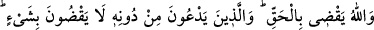
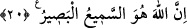

ve sırrında nefsânî haz talebi her ân devam eder. Bununla birlikte nefis, bu hazları gerek
akıl gerekse ruh sâyesinde, yâni bunlardan korkusundan dolayı gizleyip örter. Fakat
fırsatını bulduğu anda gözün harekete geçip arzu ettiği; bakılması haram olan şeylere
bakarak haz almasını sağlar ki bakış da şehvet de gizlidir. Allah Teâlâ bu âyet-i
kerimede her ikisini böylece tavsif etmiştir. Peygamberimiz (s.a.) de “Ya Rab! Gizli
şehvetten sana sığınırım”[175] diyerek her ikisinden de Allah’a sığınmıştır.
Öte yandan âşık ruhlar, ezel cemâlini müşâhede etmekte zorlandıkları zaman kabza
uğrayıp daralırlar. Haz ararlar. Fakat Hakk’a bakmaya da güçleri yetmez. İşte bu
durumda söz konusu hazzı, üzerinde ruhâniyet izleri taşıyan bir insan sûretinden elde
etmek isterler. Onun görüntüsünden akıl görüntüsüne, akıl görüntüsünden kalb
görüntüsüne, kalb görüntüsünden nefis görüntüsüne, nefis görüntüsünden sûret
görüntüsüne bakarlar. Gözden de güzel şeylerin cemâline bakarlar. Tâ ki kendilerine
gizli ve örtülü kalmış bulunan Hakk göstergeleri ortaya çıksın. Bu arada nefisler de
ruhlarla birlikte gider ve onların haz araması sırasında şehvânî bakışlarla kendi
hazlarını ararlar. Nefsin bu bakışına ne şeriat ne tarikat ne de hakîkat rızâ gösterir.
Ayrıca ruhun Hakk’a bâzı vâsıtalarla bakması da bir hıyânettir. Öyle ise ruhun da Hak
Teâlâ, kendisine vâsıtasız olarak tecelli edinceye kadar sabredip o kabz halinde
durması gerekir.
Şeyh Sa’di der ki:
Niçin bir günlük çocuk onun aklını almıyor?
Allah’ın sanatını görmek için ergenle küçüğün ne farkı var?
Hakîkate ermiş kimse develerde de görür
Çin ve Çiğil güzellerinde gördüklerini.
Gerçek mânâda bir bakış için muvaffakıyet yalnız Yüce Allah’tandır.
20. Allah, adaletle hükmeder. O’nu bırakıp taptıkları ise, hiçbir şeye
hükmedemezler. Şüphesiz Allah, hakkıyla işiten ve görendir.
“Allah,” bütün güzel ve çirkin davranış sahipleri hakkında “gerçekle” doğruluk ve
adâletle “hükmeder.” Zira mutlak mânâda hâkim ve sâhip O’dur. Dolayısıyla verdiği
hükümler mutlaka mükelleflerin lâyık ve müstahak olduğu gerçek ve âdil hükümlerdir.
Bu ifâde, mükelleflerin korkusunu artıracak mâhiyettedir. “O’nu” o yüce varlığı
“bırakıp da yalvardıkları,” ibâdet ettikleri, taptıkları putlar “bir şeye hüküm
veremezler.” Onlar bir şeye hükmedemezler, çünkü eğer cemad iseler onların ona